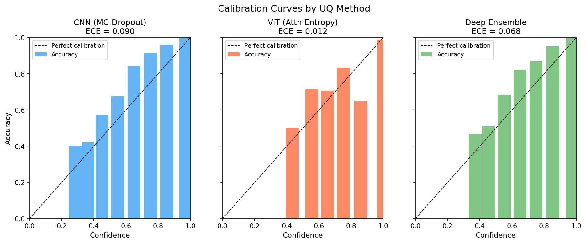
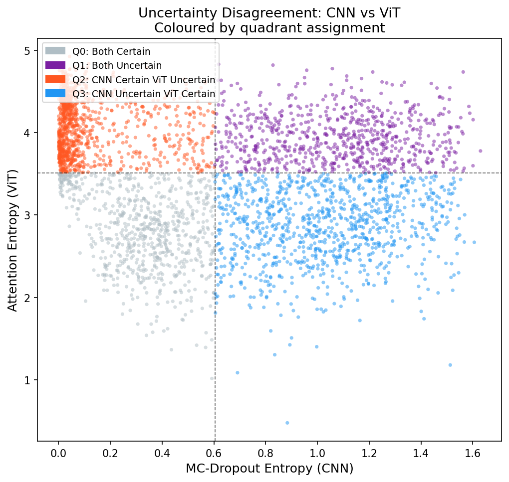
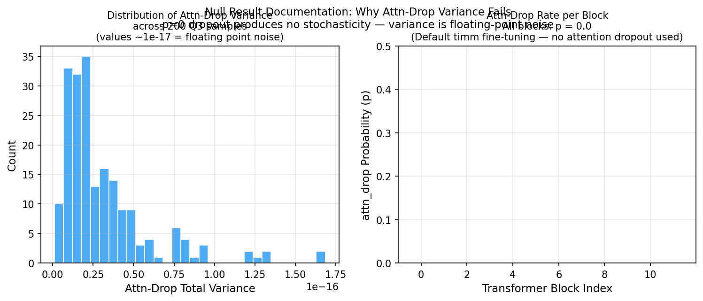
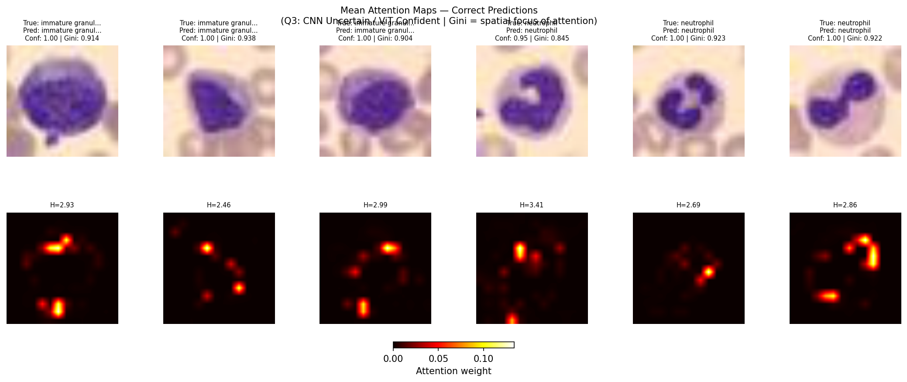
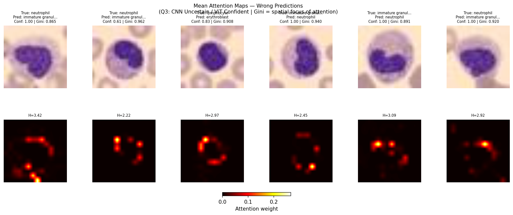

Independent Research
TL;DR
This project explores whether uncertainty signals derived from CNNs and Vision Transformers (ViTs) flag the same failure modes on medical image classification. Comparing MC-Dropout, Deep Ensembles, and Attention Entropy, the central finding is that CNN and ViT uncertainty signals disagree on 57.9% of test samples. This disagreement is not random noise; it is driven by how convolutions and self-attention structurally process images. Furthermore, the ViT model showed near-zero correlation between its uncertainty signal and its actual errors—proving that high accuracy does not guarantee a safe, reliable uncertainty measure.
In high-stakes fields like medical image processing, deploying deep learning models requires not just high classification accuracy but also reliable uncertainty quantification (UQ). A model that is confidently wrong is far more dangerous in practice than one that correctly signals its own doubt and defers to a human expert.
This independent study investigates how different architectures quantify that doubt, comparing MC-Dropout, Deep Ensembles, and Vision Transformer (ViT) attention entropy. Specifically, the project addresses three core questions: Do CNN-based and ViT-based uncertainty signals identify the same ambiguous samples? Is their disagreement random or structured by visual features? And can spatially-resolved attention signals recover uncertainty information that scalar entropy misses? Ultimately, the findings reveal a 57.9% architectural disagreement across test samples and uncover critical constraints in standard pre-trained models—proving that even a highly accurate ViT (98.4%) can confidently make incorrect predictions despite attending to the exact right features.
All experiments used BloodMNIST (from MedMNIST v2), containing 17,092 microscopy images of individual blood cells. This dataset is highly relevant because morphological ambiguity between some cell types is genuine. For instance, an immature granulocyte and a mature neutrophil can look nearly identical even to trained doctors, making reliable uncertainty estimation critical.
| Property | Detail |
|---|---|
| Classes | 8 total (neutrophil, eosinophil, basophil, etc.) |
| Split | 11,959 train / 1,712 val / 3,421 test |
| Resolution | 28×28 RGB; upsampled to 224×224 for ViT |
Three model configurations were trained and evaluated, each representing a distinct philosophy for calculating uncertainty:
Stage 1 — MC-Dropout CNN
A convolutional network utilizing approximate Bayesian inference. Dropout layers are kept active during inference, passing the image through 50 stochastic forward passes. The predictive entropy across these passes serves as the uncertainty estimate.
Stage 2 — Deep Ensemble
Five identical CNNs trained from different random starting points. Uncertainty is estimated as the disagreement (predictive entropy) across all five models. This is widely considered the empirical gold standard for UQ.
Stage 3 — ViT with Attention Entropy
A fine-tuned Vision Transformer (vit_tiny). Uncertainty is measured as the entropy of the [CLS] token’s attention distribution. Diffuse attention implies uncertainty; focused attention implies confidence.
The ViT substantially outperformed both CNN configurations on accuracy and calibration. However, its uncertainty signal was essentially uncorrelated with its own errors. High accuracy and high calibration do not automatically mean the model knows when it might be wrong.

Fig 1. Calibration curves. The Spearman column is the critical metric: a useful uncertainty signal should correlate positively with errors.
The CNN and ViT uncertainty signals disagreed on 1,982 of 3,421 test samples (57.9%). Crucially, this disagreement isn't random—it is concentrated in specific cell classes and directly explainable by how the models process images.

Fig 2. CNN vs ViT uncertainty scores mapped into four disagreement quadrants.
| Quadrant | Dominant Classes | Architectural Interpretation |
|---|---|---|
| Q0: Both Certain | Neutrophil, Erythroblast | Reliable — both architectures agree. |
| Q1: Both Uncertain | Basophil, Monocyte | High-risk — wrong 1 in 3 predictions. |
| Q2: CNN Certain / ViT Uncertain | Platelet, Eosinophil | CNN advantage: better at compact, local textures. |
| Q3: CNN Uncertain / ViT Certain | Immature Granulocyte | ViT advantage: better at global morphological context. |
In Q3 (where the CNN is uncertain but the ViT is confident), we explored whether spatially-resolved attention signals could catch errors that scalar entropy missed.
We found that stochastic attention inference is architecturally unavailable in standard fine-tuned ViTs without explicit retraining. The attn_drop layer is initialized at 0.0 by default, producing variance that is essentially just floating-point noise.

Fig 3. Variance values across samples cluster near zero, demonstrating that standard pre-trained ViTs lack stochastic attention out-of-the-box.
Visual inspection provided the clearest explanation for why ViT uncertainty metrics failed. When the ViT made incorrect predictions in Q3, its attention maps were not erratic or confused. It focused correctly on the relevant anatomical features (nuclear boundaries, membrane structure) but simply attributed them to the wrong class.

Fig 4. Correct predictions: Tight focus on discriminative regions.

Fig 5. Wrong predictions: Structurally coherent attention on the exact same features. Correct spatial reasoning, but incorrect class assignment.
1. Semantic, Not Attentional Errors: The ViT's misclassifications on fine-grained cells are semantic. The model "looks" at the right part of the image but guesses the wrong name. This failure mode is completely invisible to uncertainty signals derived from the attention mechanism.
2. Accuracy ≠ Reliability: Do not assume a high-accuracy, well-calibrated model produces a reliable uncertainty signal. Calibration and uncertainty sensitivity are completely different properties and must be tested separately before clinical deployment. Feature-space signals (like SNGP or DUQ) are required to catch these kinds of errors.